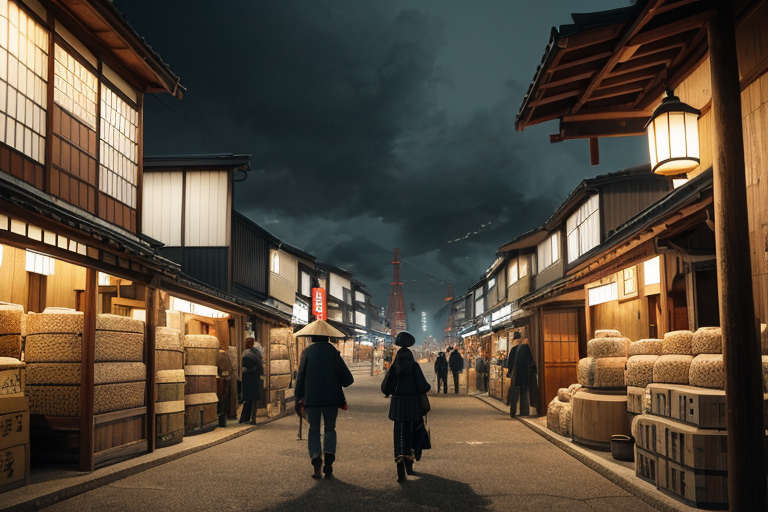
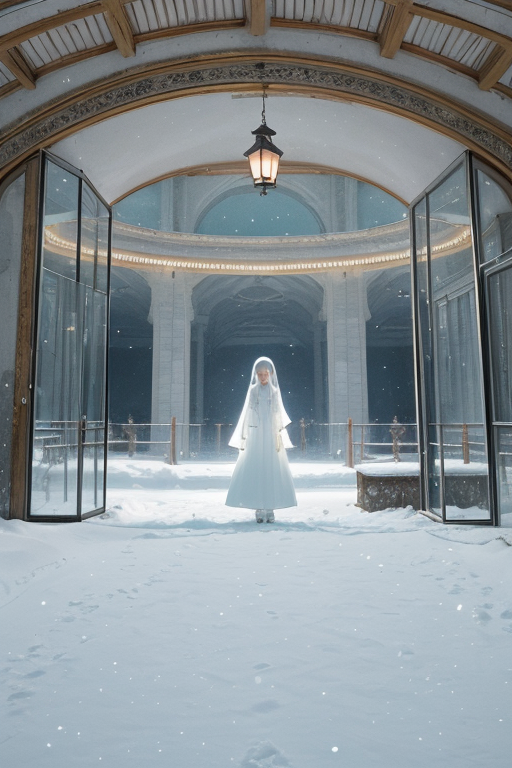
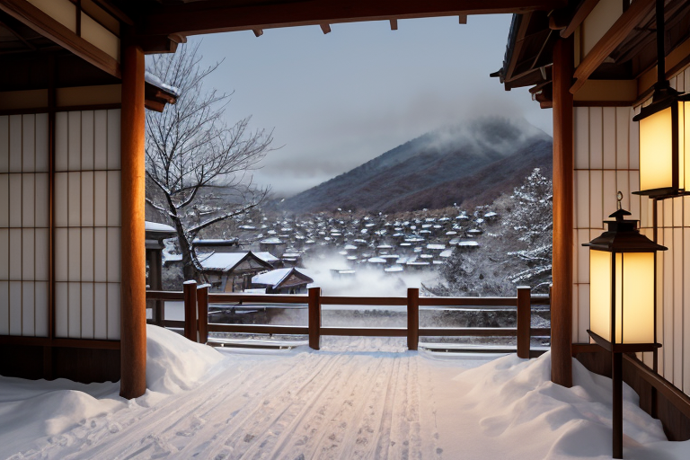
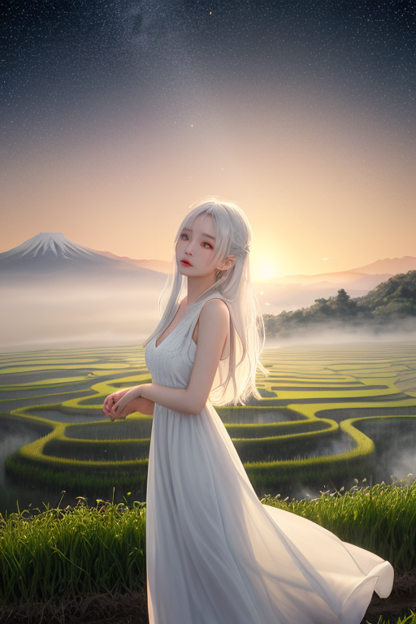

第一章 現実の新潟
あなたはまだ気づいていない。この土地にも、王がいることを。
日本海の荒波を背に、新潟港には貨物船がひっきりなしに出入りする。埠頭ではクレーンのアームが規則正しく動き、米俵や酒樽が積み下ろされる。駅前の広場は、北前船の時代から続く商人たちの活気に満ちている。金の流れは、人のざわめきとなり、欲望の匂いとなり、この街の空気を濃密に染め上げる。
その賑わいの只中、誰も気に留めない路地の片隅に、一人の男が佇んでいた。藍染めの作業着のような服を着たその男――ニイガリア・アルバは、無言で往来を見つめている。彼の目には、この活気そのものが「歪み」として映る。あまりに速い流通、過剰な期待、膨張する投機の気配。それらが土地に無理な圧力をかけ、目に見えない亀裂を生み出そうとしている。
彼の肩に、雪のように白い小さな光が舞い降りた。主席妖精アルバナだ。「圧力、上昇中です」。王は微かに頷く。彼の役割は止めることではない。調整することだ。余白を用意することだ。活気という名の奔流が、この土地を破壊しないための、ほんの少しの「間」を。
さて、余白に何を書く？

第二章 歪みの兆候
越後湯沢の駅ビルは、週末のスキー客と買い物客でごった返していた。人々の熱気と、新たなリゾート開発の広告が、ガラス窓を曇らせる。王はその雑踏の片隅、ベンチに佇み、流れを見つめていた。金の流れ、人の流れ。それは確かにこの土地を潤す恵みの川であった。しかし、その川床には、無理な開発による地盤の微かな軋み、過剰な融資が生む見えない緊張が、砂のように堆積し始めていた。
「豊穣波、乱流の予兆を検知」
稲穂色の光を纏った妖精コシヒカリスが、王の耳元で囁く。彼女が司るのは、実りを約束する波長の安定だ。今、その波長に、投機という雑音が混じり、本来の実りへのリズムを乱そうとしている。米相場の変動が、農家の顔に刻む深い皺。日本酒蔵の伝統の技法と、効率化を求める資本のせめぎ合い。
王は静かに目を閉じた。彼の王国の本質は「余白」だ。雪が全てを覆い隠し、静寂をもたらすように。彼が今、用意すべき余白とは、この熱狂に一呼吸の「間」を挿入すること。破綻ではなく、調整のための余地。

第三章 王の葛藤
越後湯沢の温泉街は、雪明かりに浮かび上がる。歓楽の熱気が雪を溶かし、湯煙と金の匂いが混じり合う。王は旅館の縁側に佇み、その喧噪を遠くに見つめていた。彼の内側で、静寂を保とうとする「余白」の性質と、この地に流れ込む人間の活気や欲望との間に、目に見えない歪みが生じ始めていた。
佐渡金山がもたらした富の奔流。かつては金を、今は雪と温泉を、人々は「資源」として切り取り、消費する。その熱量そのものは否定できない。生きるための営みだ。しかし、過剰な投機は土地のリズムを歪め、棚田の水脈のように長い時間をかけて育まれた均衡を危うくする。主席妖精アルバナが懸命に雪を降らせ、過剰な熱を覆い隠そうとする。だが、覆い隠すだけでは、歪みは解消されない。
「余白に、何を書くべきか」
王は自らに問う。欲望を否定する「無」を書くのか。それとも、その奔流をそのまま流す「放任」を書くのか。彼の心に、初めて「迷い」という感情の襞が刻まれた。守護とは、時に、守るべきものの一部を削ぎ落とす冷酷な行為でもある。雪原のような余白は、時に、何も生まない冷たさでもある。彼は、その冷たさと、人間の熱の狭間で、初めて自らの在り方に葛藤を覚えた。

第四章 妖精との対話
星峠の棚田の水面に、夕陽が沈んでいく。王は、稲穂の妖精コシヒカリスと並んで、その光を見つめていた。
「豊穣とは、ただ実るだけではないのです」と、妖精は囁いた。「米は、金に変わり、酒に変わり、欲望の川を流れる。佐渡の金も、越後の米も、人を動かす『力』です。歪みは、その力の流れが、時に自らの器を壊そうとする時に生じる」
王は黙って聞く。妖精の声は、棚田の水のように冷たく、澄んでいた。
「上杉謙信も、その力を制御しようとした一人でしょう。『義』という余白を、戦国の欲望の中に書こうとした。でも、力は、時に義を押し流す。今も同じです。商いの熱は、雪を溶かし、時には土地をも変えようとする」
「では、余白に書くべきは？」王が問う。
「『間』です」と、妖精は答えた。「収穫と消費の間。売りと買いの間。蓄積と放出の間。その一呼吸の余白が、流れを暴走させない。私が稲穂の波を安定させるのも、その『間』を守るため。あなたのなすべきことは、この熱い流れを止めることではなく、その『間』を確保すること。それが、この土地を、その豊かさ自体から守る術です」
王は、黄金色に染まる棚田を見つめた。そこには、収穫前の、緊張した静寂があった。
第五章「微調整と余韻」
星峠の棚田は、やがて黄金から刈り跡の茶色へと変わった。収穫の熱気は、米の取引所へと移り、数字と欲望が渦巻く。王は、その熱気のただ中に立っていた。彼の役目は、流れを止めることではない。過熱する売り注文と買い注文の「間」に、ほんの一瞬の余白を挿入することだ。画面の更新を0.1秒遅らせ、駆け込もうとする客の足を微妙に滑らせ、熱狂的な交渉の席に沈黙の一呼吸をもたらす。誰も気付かない微調整。それは、暴走する熱を、持続可能な活気へと整えるための、目に見えない堰であった。
ある夜、王は越後湯沢の温泉街の片隅で、疲れ切った米商人を見た。男は携帯を握りしめ、相場の変動に翻弄されていた。王はそっと息を吹きかけた。ほんの少し、冷えた空気を。男はふと顔を上げ、湯気の向こうに浮かぶ山並みを見つめた。一瞬、無心になったその「間」に、狂おしいまでの焦燥が、深いため息へと変わった。彼はまた戦場へ戻るだろう。だが、ほんの一瞬、余白を呼吸した。
王は自問する。余白に何を書くのか、と。答えはまだない。ただ、この土地の熱い鼓動を、その鼓動自体が土地を壊さないように、微調整し続ける。雪が降り積もり、すべてを覆い、静かな余白を作るように。
あなたの町にも、王がいる。